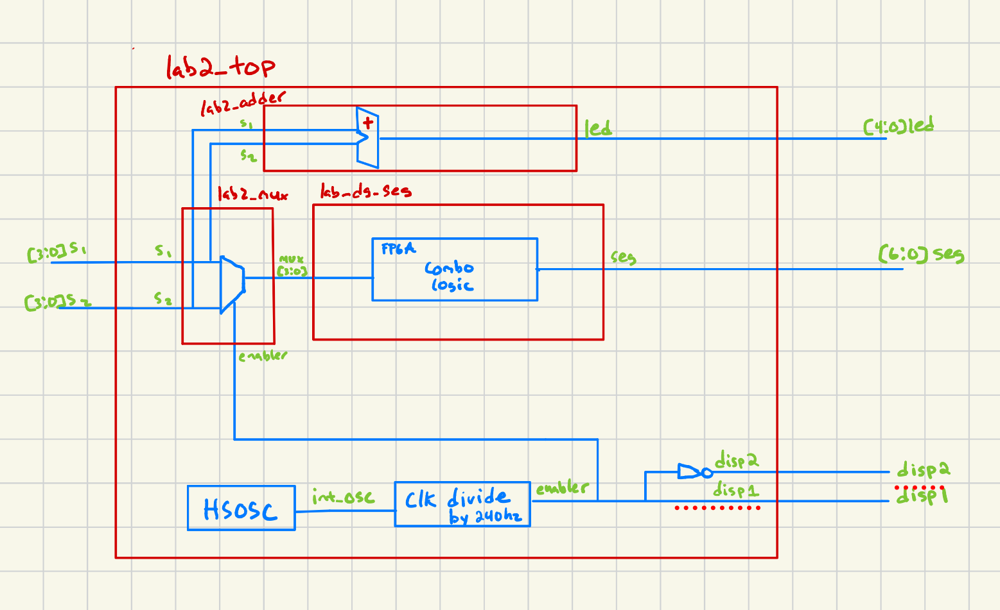
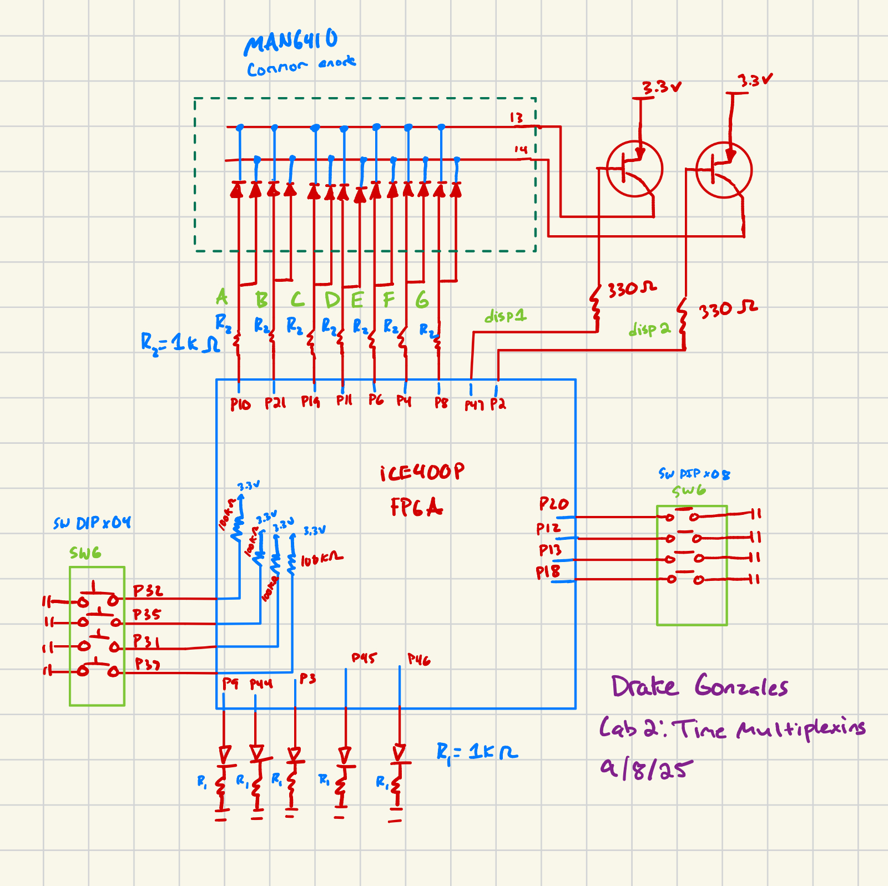
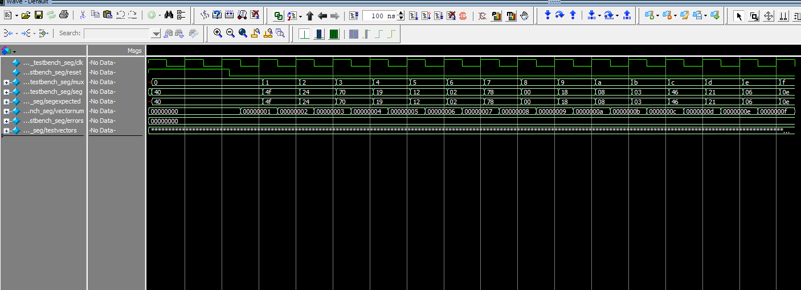
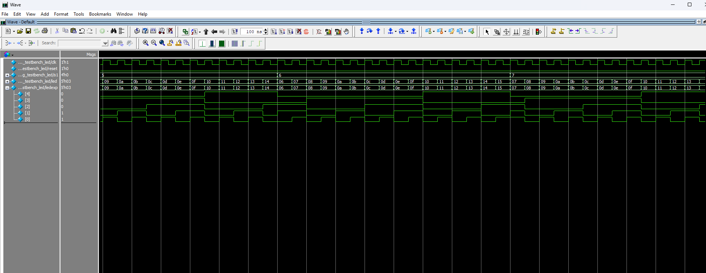
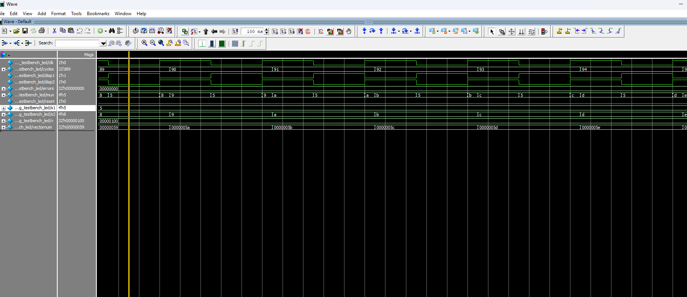
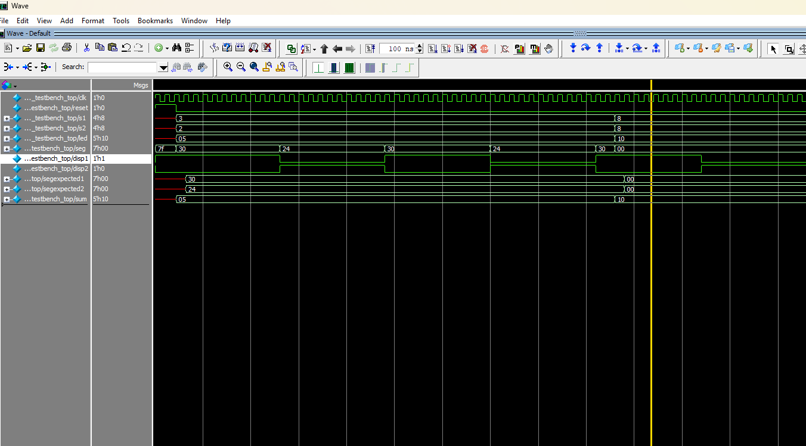

Lab 2 - Multiplexed 7-segment display
Introduction
In this lab, a time-multiplexing scheme was made to drive two 7-segment display using single set of FPGA I/O pins. Time multiplexing is a technique in computer hardware that basically allows the use to use multiple purposes of a specific hardware at different times. In the case of this lab, time-multiplexing is used by displaying hexidecimal digits on the 7-segement display. The catch is, the display has two digital displays, but is controled by only one set of FPGA pins. Since both digits cannot be displayed at the same time, each digit is flickered to the point to where it appears each are both on at the same time. While this display is in place, five leds on a breadboard will display the addition of the hexadecimal digits displayed.
The design was developed using SystemVerilog, a hardware description language, and was tested using Intels Questa, a logic waveform simulator.
Technical Documentation
The source code for this lab can be found in this GitHub repo.
Equations
To be able to solve for the correct clock cycles to correctly see both digits, first use a frequency in which the human cannot see flickering. This was guessed at around 240 Hz. Then do 1/F to get time = 0.00416 seconds. Then divide this by 2 to get 1 toggle (on), which is 0.002083 seconds. Finally, to solve for amount of cycles the equation is N = t(toggle)* frequency(clk). Solving for this, N comes out to be 100,000 cycles. Note** For testing of the HSOSC I used a frequency of 2.4 Mhz to be able to see the displays clearly toggling in the simulation.
To find the current at the transistor we first find the Base-Emitter Saturation Voltage, which is ~ 0.90. We then use V=IR in which V = (3.3V - 0.90) and R = 1kΩ. We then divide 2.4V / 1kΩ to get current. Our current comes out to be 2.4mA which is an acceptable current and it worked when implemented.
Thirdly, to find the overall input current for the 7-segment display, the formula V-Vd-IR=0 was used. The knowns for this equation are Vin, which is 3.3V, V(drop), which is around 0.7V, and the resistance used was 1kΩ based on how bright the light was. Using this, the current comes out to 2.6 mA, which is an acceptable current.
Lastly, for the leds we use current-limiting resistors. To solve for the current we use the same formula from above in which V-Vd-IR=0. The input current is 3.3V, Vd (drop) is around 2.2V. For the resistance, we chose a acceptable value such that our leds will still be bright for the lab. Thus we do 3.3V- 2.2V = 1.1V. Then we divide this by 1kΩ to get 1.1mA, which is an acceptable current.
Block Diagram

The block diagram above hosts the FPGA, a mux, a HSOSC module, and an output for the LED adder module. The input to this whole system is two input switches, s1 and s2, and three outputs, which were the display output, the binary 7-segment output, and the five Led adder output.
Wiring Schematic

Figure 2 above pictures the electrical circuit related to the FPGA and the 7-segment display. It portrays both modules along with the pins used for each module, and the necessary switches, LED’s, pull down resistors, and transistors needed. For each LED illuminated, a 1kΩ resistor was used to limit current from the FPGA.
Results and Discussion
The design implemented onto the FPGA met the primary objective of this lab, which was to display two hexadecimal digits on a two-sided 7-segment display and control five LED’s for an adder. This design was succsessfull in the way it that each Hexadecimal digits were clearly displayed at the ‘same time’, and the sum of these numbers was displayed on our led[4:0]. Furthermore, each segment on the 7-segment display appeared the same brightness, which suggests that the transistors and other electrical components worked as intended, and the sum of our numbers from the adder was correct.
Testbench Simulation
The following simulations were run on Intel’s Questa. This was done to visually see the waveforms created as a result of the logic used. To complete this simulation, a testbench was created to run test vectors through the logic created. Each testbench below was written different.
For the 7-segment design, a testvector file was created to run through all possible switch inputs and outputs to our 7-segment display.
Secondly, for the adder design, a for loop was created to run through all 256 possible testvectors possible. On the rising edge of the clock each testvector is ran through our .sv file, while on the falling edge, a test is ran to ensure that the sum is the expected value.
Thirdly, for our mux design, it displayed the same idea as the adder design, however there was no addition going into the for loop, and it checked if our enabler worked correctly.
Finally, our top design held three test, each with different switch combinations, that tested whether the outputs match our expected outputs after it is ran through our module files.
7-segment Display Simulation

Above is waveform simulation for the the 7-segment display design. This design was purely combinational logic, and hosts a clk and reset. This simulation was a success due to seg matching segexpected.
LED Display Simulation

Figure 4 shows the successfull simulation coming from the LED adder. The decimal values stemming from led and ledexpected are the same which shows that the leds will display the same behavior when connected to our FPGA.
Mux Simulation 
Figure 5 shows the simulation of the mux that has inputs of switches and the enabler. This simulation was a success based upon the fact that the output [mux] chnages based on which disp output was high.
Top Module Simulation

Above is the top module design for the lab. It hosts inputs of reset and switches, and has outputs displ, led[4:0], seg[6:0]. To test the clock divider, a 2.5Mhz frequency was ran through the simulation. To test if this was done correct, we check if each of the sub-modules were performed correctly, then checked if, on the rising and falling edge of the clock, the clock divider changed, along with the disp, and mux outputs.
Conclusion
The design created was a successs. With each segment on the 7-segment display illuminating at the correct frequency, each transistor operating as intended, each led adding correctly, and each switch wired correctly. This lab was completed in 8 hours.
Suggestions
When first creating the modular design, keep the HSOSC at the top module level such that overall module testing is easier. Use a clk to test the HSOSC for a set frequency to be able to see correct toggling.
Ai prototype
Below is the output from Claude Ai after running this prompt: Write SystemVerilog HDL to time multiplex a single seven segment decoder (that decodes from four bits to a common anode seven segment display) to decode two sets of input bits and drive two sets of seven output bits.
// Time Multiplexed Seven Segment Decoder // Multiplexes a single decoder to drive two common anode displays
module seven_seg_mux ( input logic clk, input logic rst_n, input logic [3:0] digit0_in, // First 4-bit input input logic [3:0] digit1_in, // Second 4-bit input output logic [6:0] seg0_out, // Seven segments for display 0 (active low) output logic [6:0] seg1_out, // Seven segments for display 1 (active low) output logic [1:0] display_sel // Display selection for external digit enable );
// Internal signals
logic [3:0] mux_input;
logic [6:0] decoder_output;
logic mux_sel;
logic [15:0] counter; // Counter for time multiplexing
// Counter for generating multiplex timing
// Adjust counter width and compare value for desired refresh rate
always_ff @(posedge clk or negedge rst_n) begin
if (!rst_n)
counter <= 16'h0;
else
counter <= counter + 1;
end
// Generate multiplex select signal
// Toggle every 2^15 clock cycles (adjust as needed)
assign mux_sel = counter[15];
assign display_sel = {~mux_sel, mux_sel}; // One-hot display enable
// Input multiplexer
always_comb begin
case (mux_sel)
1'b0: mux_input = digit0_in;
1'b1: mux_input = digit1_in;
endcase
end
// Seven segment decoder (common anode - active low outputs)
always_comb begin
case (mux_input)
4'h0: decoder_output = 7'b1000000; // 0
4'h1: decoder_output = 7'b1111001; // 1
4'h2: decoder_output = 7'b0100100; // 2
4'h3: decoder_output = 7'b0110000; // 3
4'h4: decoder_output = 7'b0011001; // 4
4'h5: decoder_output = 7'b0010010; // 5
4'h6: decoder_output = 7'b0000010; // 6
4'h7: decoder_output = 7'b1111000; // 7
4'h8: decoder_output = 7'b0000000; // 8
4'h9: decoder_output = 7'b0010000; // 9
4'hA: decoder_output = 7'b0001000; // A
4'hB: decoder_output = 7'b0000011; // b
4'hC: decoder_output = 7'b1000110; // C
4'hD: decoder_output = 7'b0100001; // d
4'hE: decoder_output = 7'b0000110; // E
4'hF: decoder_output = 7'b0001110; // F
endcase
end
// Output demultiplexer - route decoder output to appropriate display
always_comb begin
if (mux_sel == 1'b0) begin
seg0_out = decoder_output;
seg1_out = 7'b1111111; // All segments off (active low)
end else begin
seg0_out = 7'b1111111; // All segments off (active low)
seg1_out = decoder_output;
end
endendmodule
// Testbench module seven_seg_mux_tb; logic clk; logic rst_n; logic [3:0] digit0_in; logic [3:0] digit1_in; logic [6:0] seg0_out; logic [6:0] seg1_out; logic [1:0] display_sel;
// Instantiate DUT
seven_seg_mux dut (
.clk(clk),
.rst_n(rst_n),
.digit0_in(digit0_in),
.digit1_in(digit1_in),
.seg0_out(seg0_out),
.seg1_out(seg1_out),
.display_sel(display_sel)
);
// Clock generation
initial begin
clk = 0;
forever #5 clk = ~clk; // 100MHz clock
end
// Test stimulus
initial begin
// Initialize
rst_n = 0;
digit0_in = 4'h0;
digit1_in = 4'h0;
// Reset release
#20 rst_n = 1;
// Test different digit combinations
#100 digit0_in = 4'h5; digit1_in = 4'hA;
#100 digit0_in = 4'h3; digit1_in = 4'h7;
#100 digit0_in = 4'h9; digit1_in = 4'hF;
// Run for several multiplex cycles
#1000000;
$finish;
end
// Monitor outputs
initial begin
$monitor("Time=%0t, mux_sel=%b, digit0=%h, digit1=%h, seg0=%b, seg1=%b, disp_sel=%b",
$time, dut.mux_sel, digit0_in, digit1_in, seg0_out, seg1_out, display_sel);
endendmodule
After this was created, another prompt was ran through claude: Write SystemVerilog HDL to time multiplex a single seven segment decoder (that decodes from four bits to a common anode seven segment display) to decode two sets of input bits and drive two sets of seven output bits. Use the seven segment decoder and oscillator provided in the attached files.
// Time Multiplexed Seven Segment Decoder // Uses existing lab2_dg_seg decoder and HSOSC oscillator // Multiplexes between two 4-bit inputs to drive two separate 7-segment outputs
module time_mux_seven_seg ( input logic reset, input logic [3:0] digit0_in, // First 4-bit input input logic [3:0] digit1_in, // Second 4-bit input output logic [6:0] seg0_out, // Seven segments for display 0 output logic [6:0] seg1_out, // Seven segments for display 1 output logic disp0_en, // Display 0 enable (active high) output logic disp1_en // Display 1 enable (active high) );
// Internal signals
logic int_osc; // Internal oscillator
logic [3:0] mux_input; // Multiplexed input to decoder
logic [6:0] decoder_output; // Output from seven segment decoder
logic enabler; // Multiplex control signal
logic [20:0] counter; // Counter for timing
// Internal oscillator instantiation (same as in lab2_dg_top)
HSOSC hf_osc (.CLKHFPU(1'b1), .CLKHFEN(1'b1), .CLKHF(int_osc));
// Clock divider and multiplex control (similar to lab2_dg_top)
always_ff @(posedge int_osc) begin
if (~reset) begin
counter <= 21'b0;
enabler <= 1'b0;
end else begin
if (counter == 21'd100000) begin // Adjust for desired refresh rate
enabler <= ~enabler;
counter <= 21'b0;
end
else
counter <= counter + 21'd1;
end
end
// Input multiplexer (based on lab2_dg_mux logic)
always_comb begin
if (enabler == 1'b0) begin
disp0_en = 1'b1;
disp1_en = 1'b0;
mux_input = digit0_in;
end
else begin
disp0_en = 1'b0;
disp1_en = 1'b1;
mux_input = digit1_in;
end
end
// Instantiate existing seven segment decoder
lab2_dg_seg u_seg (
.mux(mux_input),
.seg(decoder_output)
);
// Output demultiplexer - route decoder output to appropriate display
// Turn off inactive display (all segments high for common anode)
always_comb begin
if (enabler == 1'b0) begin
seg0_out = decoder_output;
seg1_out = 7'b1111111; // All segments off (common anode)
end else begin
seg0_out = 7'b1111111; // All segments off (common anode)
seg1_out = decoder_output;
end
endendmodule
// Testbench for the time multiplexed seven segment decoder module time_mux_seven_seg_tb(); logic reset; logic [3:0] digit0_in; logic [3:0] digit1_in; logic [6:0] seg0_out; logic [6:0] seg1_out; logic disp0_en; logic disp1_en; logic [31:0] errors;
// Instantiate DUT
time_mux_seven_seg dut (
.reset(reset),
.digit0_in(digit0_in),
.digit1_in(digit1_in),
.seg0_out(seg0_out),
.seg1_out(seg1_out),
.disp0_en(disp0_en),
.disp1_en(disp1_en)
);
// Test stimulus
initial begin
errors = 0;
// Initialize
reset = 0;
digit0_in = 4'h0;
digit1_in = 4'h0;
// Reset release
#22 reset = 1;
// Test case 1: Display 3 and 2
digit0_in = 4'h3;
digit1_in = 4'h2;
$display("Test 1: digit0=3, digit1=2");
// Wait for several multiplex cycles and check outputs
repeat(10) begin
// Wait for display 0 to be active
wait(disp0_en && !disp1_en);
#10;
if (seg0_out != 7'b0110000 || seg1_out != 7'b1111111) begin // 3 on display 0
errors++;
$display("Error: Display 0 showing digit 3 failed");
end else begin
$display("Display 0 correctly showing 3");
end
// Wait for display 1 to be active
wait(!disp0_en && disp1_en);
#10;
if (seg1_out != 7'b0100100 || seg0_out != 7'b1111111) begin // 2 on display 1
errors++;
$display("Error: Display 1 showing digit 2 failed");
end else begin
$display("Display 1 correctly showing 2");
end
end
// Test case 2: Display A and F
digit0_in = 4'hA;
digit1_in = 4'hF;
$display("Test 2: digit0=A, digit1=F");
// Wait and check again
repeat(5) begin
wait(disp0_en && !disp1_en);
#10;
if (seg0_out != 7'b0001000) begin // A on display 0
errors++;
$display("Error: Display 0 showing digit A failed");
end else begin
$display("Display 0 correctly showing A");
end
wait(!disp0_en && disp1_en);
#10;
if (seg1_out != 7'b0001110) begin // F on display 1
errors++;
$display("Error: Display 1 showing digit F failed");
end else begin
$display("Display 1 correctly showing F");
end
end
// Test case 3: Same digits on both displays
digit0_in = 4'h8;
digit1_in = 4'h8;
$display("Test 3: Both displays showing 8");
repeat(3) begin
wait(disp0_en && !disp1_en);
#10;
if (seg0_out != 7'b0000000) begin // 8 on display 0
errors++;
$display("Error: Display 0 showing digit 8 failed");
end
wait(!disp0_en && disp1_en);
#10;
if (seg1_out != 7'b0000000) begin // 8 on display 1
errors++;
$display("Error: Display 1 showing digit 8 failed");
end
end
$display("Testbench completed with %0d errors", errors);
if (errors == 0)
$display("All tests PASSED!");
else
$display("Some tests FAILED!");
$finish;
end
// Monitor for debugging
initial begin
$monitor("Time=%0t, reset=%b, enabler=%b, disp0_en=%b, disp1_en=%b, digit0=%h, digit1=%h, seg0=%b, seg1=%b",
$time, reset, dut.enabler, disp0_en, disp1_en, digit0_in, digit1_in, seg0_out, seg1_out);
endendmodule
First prompt
The first prompt centered around ramking our lab but from ai. This prompt centered around time multiplexing for the 7-segment display. Once ran on Radiant, the simulation outputted an error about looping, saying:
Error 35901282 Synthesis ERROR <35901282> - c:/users/drgonzales/e155-lab1-main/fpga/src/lab2/lab2/source/impl_1/aiproto.sv(101): loop count limit exceeded forever never breaks. VERI-1282 [aiproto.sv:101]
This error suggests that a loop within the code is looping forever, specifically on line 101. The overall output coming from the Ai, however was correct, it had the right idea of time multiplexing, using the HSOSC from the FPGA, and had correct logic for the mux and 7-segment display.
Second prompt
The second prompt had the same idea as the first, however the design files from this lab were also uploaded to compare our .sv files to the code the ai produced. The error that came after synthesis in Radiant was:
Error 1025000 Synthesis ERROR <1025000> - C:/Users/drgonzales/e155-lab1-main/fpga/src/lab2/lab2/source/impl_1/aiproto2.vm(26): syntax error near ‘@’
This error, however, was confusing in that I did not see a syntax error at this @. This may have been the ai used some sneaky syntaax when c reating the verilog that the synthesis is not used to, but overall the “always_ff @” was used correclty in my opinion. Furthermore, the rest of the code was organized correctly, with correct combinational logic.